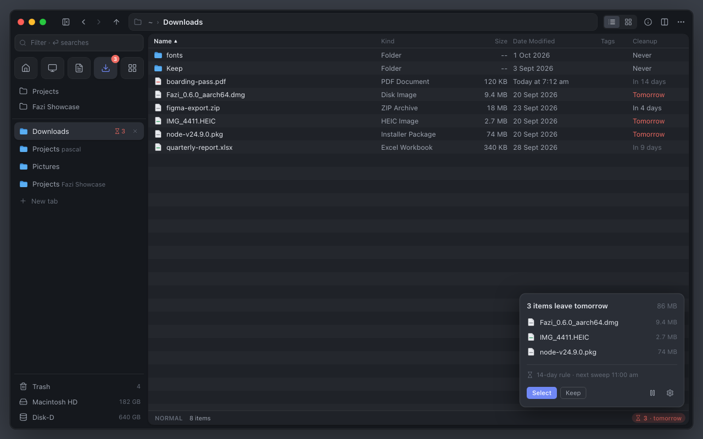
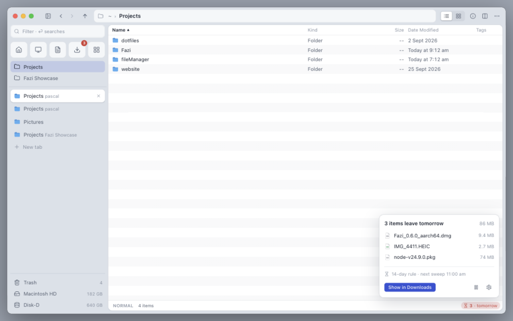

A · Footer pill no banner
One red pill in the footer, “⌛ 3 · tomorrow”, shown from any folder. Clicking it opens the details above it: the items and their sizes, the rule, and the actions.
- Banner
- Gone; the list starts at the top
- Footer
- “⌛ 3 · tomorrow” pill
- Actions
- In the popover: Select, Keep, Pause, Settings; “Show in Downloads” from elsewhere
- Trade-off
- The notice is small, so the red Cleanup column and the sidebar badge carry more of the warning